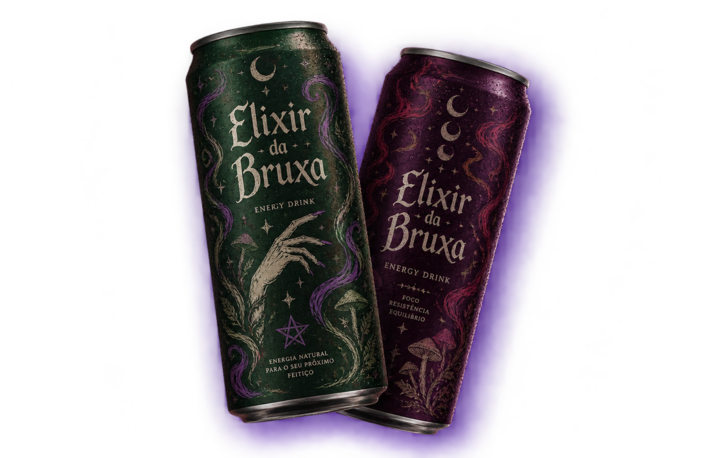
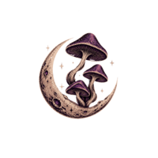

ELIXIR DA BRUXA
A infusão perfeita de ingredientes naturais para acompanhar encontros ao redor do fogo, grandes celebrações e noites que pedem energia até o último raio de sol.
Siga o chamado

A infusão perfeita de ingredientes naturais para acompanhar encontros ao redor do fogo, grandes celebrações e noites que pedem energia até o último raio de sol.
Siga o chamado